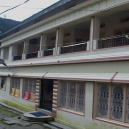
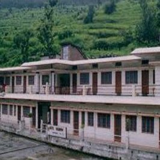

Kedarnath mandir(kedarnath temple) is a Hindu temple dedicated to Lord Shiva.Located on the Garhwal Himalayan range near the Mandakini river ,Kedarnath is located in the state of Uttarakhand ,India.Due to extreme weather conditions the temple is open to the general public only between the months of April (akshaya tritriya) and November (kartik purnima,the autumn full moon). the winters, the vigraha(deity) from Kedarnath temple is carried down to Ukhimath and where the deity is worshiped for the next six months. Kedarnath is seen as a homogenous form of Lord Shiva ,the 'Lord of Kedarkhand' the historical name of the region.
The temple is not directly accessible by road and has to be reached by a 22 kilometres (14 mi) uphill trek from Gaurikund. Pony and manchan service is available to reach the structure. According to Hindu legends, the temple was initially built by Pandavas, and is one of the twelve Jyotirlingas, the holiest Hindu shrines of Shiva.It is one of the 275 Paadal Petra Sthalams, expounded in Tevaram. Pandavas were supposed to have pleased Shiva by doing penance in Kedarnath.The temple is one of the four major sites in India's Chota Char Dham pilgrimage of Northern Himalayas. This temple is the highest among the 12 Jyotirlingas. Kedarnath was the worst affected area during the 2013 flash floods in North India. The temple complex, surrounding areas, and Kedarnath town suffered extensive damage, but the temple structure did not suffer any "major" damage, apart from a few cracks on one side of the four walls which was caused by the flowing debris from the higher mountains. A large rock among the debris acted as a barrier, protecting the temple from the flood. The surrounding premises and other buildings in the market area were heavily damaged.
| Religious | |
| Affiliation | Hindism |
| District | Rudraprayag |
| Deity | Kedarnath lord of lord kedarkhand(shiva) |
| Location | |
| Location | Kedarnath |
| State | Uttarakhand |
| Country | India |
The temple, at a height of 3,583 m (11,755 ft), 223 km from Rishikesh, on the shores of Mandakini river, a tributary of Ganga, is a stone edifice of unknown date. It is not certain who built the original Kedarnath temple and when. The name "Kedarnath" means "the lord of the field": it derives from the Sanskrit words kedara ("field") and natha ("lord"). The text Kashi Kedara Mahatmya states that it is so called because "the crop of liberation" grows here.
According to a theological account, the god Shiva agreed to dwell here at the request of Nara-Narayana. After the Kurukshetra War, the Pandava brothers, came here to meet Shiva on the advice of the sage Vyasa, because they wanted to seek forgiveness for killing their kin during the war. However, Shiva did not want to forgive them: so, he turned into a bull and hid among the cattle on the hill. When the Pandavas managed to track him, he tried to disappear by sinking himself head-first into the ground. One of the brothers, Bhima, grabbed his tail, forcing him to appear before them and forgive them. The Pandava brothers then built the first temple at Kedarnath. The portions of Shiva's body later appeared at four other locations; and collectively, these five places came to be known as the five Kedaras ("Panch Kedar"); the head of the bull appeared at the location of Rudranath.
The Mahabharata, which gives the account of the Pandavas and the Kurukshetra War, does not mention any place called Kedarnath. One of the earliest references to Kedarnath occurs in the Skanda Purana (c. 7th-8th century), which contains a story describing the origin of the Ganges river. The text names Kedara (Kedarnath) as the place where Shiva released the holy water from his matted hair.
Burdened with the guilt of killing their blood relatives, Pandavas sought Lord Shiva to absolve themselves of their sins. Shiva didn't want to release them from their wrongdoings so easily and disguised himself as a bull to roam in Garhwal Himalayas. On being discovered by Pandavas, Shiva dived into the ground. Bhim tried to catch him and could only get hold of the hump. Other body parts of Shiva (in the form of bull), came up at different places. Hump of the bull was found in Kedarnath, navel emerged at Madhya-Maheshwar, two forelegs appeared at Tunganath, face in Rudranath, and hair came up at Kalpeshwar. Together these five sacred places are called Panch Kedar. It is believed that originally Pandavas built the temple of Kedarnath; the present temple was established by Adi Shankaracharya who restored and revived the glory of the shrine.
ROUTE
Delhi - Haridwar - Rishikesh-Devprayag - Srinagar - Rudraprayag - Tilwara - Agastamuni - Kund - Guptkashi - Phata - Rampur - Sonprayag - Gaurikund - Trek to Kedarnath
By air:
Jolly Grant airport on Rishikesh-Dehradun road is the nearest airport to Kedarnath. Hire a taxi to Gaurikund or till Haridwar/Rishikesh.
By train:
Regular trains from Delhi to Haridwar and Dehradun are available at all times of the year. Hire a cab or get a bus from here.
By bus:
Gaurikund is connected with motorable roads, and buses and taxis from important destinations like Rishikesh, Dehradun, Uttarkashi and Tehri, Pauri and Chamoli are easily available.
Punjab-Sindh-Awas Kedarnath
Hotel-Shubham-Guptkashi
Monal-Resort-Rudraprayag
Due to its elevation and geographical location, Kedarnath Temple remains open to the pilgrims for a period of six months. The end of April or beginning of the month of May is chosen for the opening of the portals of this high altitude sacred Hindu shrine. The temple closes right after Diwali and its deity is brought to Ukhimath where its worship continues for next six months of winter. Therefore the best time to visit Kedarnath Dham is between April and November with April to mid-June and October to mid-November being ideal most.
SUMMER
The month of April marks the beginning of summer season in Uttarakhand. It is the time of the year when the ice melts and with the help of the army, the roads are cleared for the commencement of pilgrimage from April end. The average temperature in Kedarnath during summer ranges from 2 degree to 19 degree celsus.
WINTER
The portals of Kedarnath close in the winter season that begins right after the day of Diwali. The temperature dips to sub zero and the deity from the temple is brought to Ukhimath to be worshipped for next six months.
MONSOON
Mid-June marks the commencement of monsoon season in Kedarnath. Even though the temperature touches the mark of 19 degree celsus, heavy rains keep it a tad difficult for trekking. Though it has to be noted with right gears and guidance, you can still trek to Kedarnath in monsoon season.